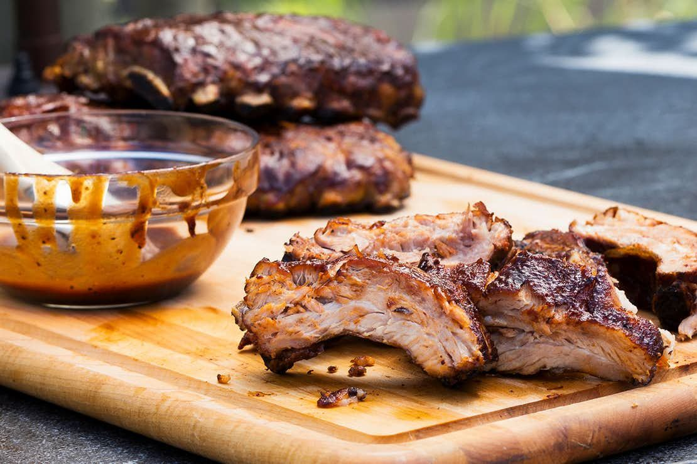

BBQ Pork Ribs

Unbelievably tender, oven-roasted BBQ Ribs that is very easy to make.
This recipe is so simple that you probably already have all the ingredients to make it
which makes for a great weeknight dinner when prepped the night before or even the weekend before!
Ingredients:
The Rib & the Rub:
- 2 Tbsp kosher salt
- 2 Tbsp ground coffee
- 1 Tbsp brown sugar
- 1 Tbsp garlic powder
- 1 Tbsp paprika
- 2-4 baby back ribs
- Splash of apple cider vinegar, or rice wine vinegar.
The BBQ Sauce:
- 1 Tbsp garlic powder
- 1 Tbsp paprika
- 1/4 cup brown sugar
- 1 cup ketchup
- 1/2 cup water
- 2 tsp kosher salt
- 2 Tbsp white vinegar
- 2 Tbsp apple cider, or rice wine vinegar
The Steps:
- Start by whisking together The Rub ingredients.
- With the rib rub, season the ribs by rubbing the rub along both sides of the ribs.
- Place each rib on a sheet of tin foil, splashing with apple cider vinegar on the rib before wrapping.
- Let sit overnight or till when needed.
- Place the ribs onto a sheet pan into a preheated oven, set to 300F, for 3 hours. Now is the time to make the BBQ sauce below.
- Remove the ribs from the foil, let rest. Glaze with the BBQ sauce.
- Use the broiler setting to caramelize the sauce onto the ribs. Remove and serve.
The BBQ Sauce:
- In a small pot, combine the BBQ Sauce ingredients.
- Turn to medium heat, let simmer for 30 mins.
- Let it cool and thicken, then place into a container for later use.
Serve on a chopping board or similar dish, and devour those ribs!